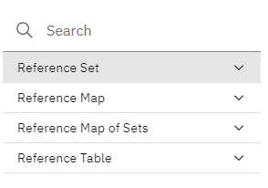
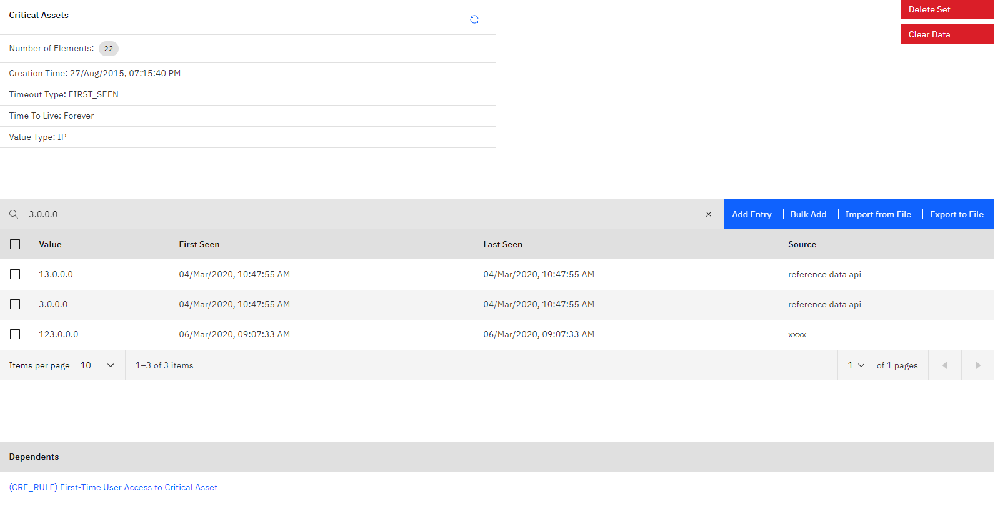
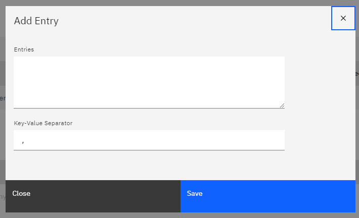

The app allows the creation, deletion and visualization of all types of Reference Data in QRadar. Most supported operations on the different data types can be performed from within the app, for instance bulk insertion of new data into a Reference Map. The different data types and available operations are described below.
The view consists of two sections. In the left side of the view, all the defined reference data entries are shown. The entries are ordered alphabetically by type (set, map, map of set, table).

By clicking on the + next to a reference data type, a new reference data entry of the specific type can be created:
Clicking on one of the entries will display the contents of the specified entry.

It should be noted, that for large reference data entries, loading will be done in chunks but the data will only be displayed when all entries have been loaded. That the loading is ongoing can be verified by checking if the number of elements, displayed on the top of the view changes periodically.
Reference Sets and Maps support the most operations
Add a single entry to the reference set
Add multiple entries at the same time. A separator needs to be specified which can be used to split the entries. Additionally, a new line can be used to separate entries, as new lines will be implicitly used as separator character.
Similiarliy to the Bulk Add functionality, instead of pasting the contents in the bulk add text area, a file can be specified which contains the data to be added. As described above, a separator needs to be specified.
The data can be exported easily into a file in CSV format.
Important: The exported data cannot simply be reimported to QRadar via the
import csvfunction as it contains additional fields likelast seenorsource. Instead, theimport csvfunction simply expects values separated by the specified character.
One or multiple entries can be selected by clicking on them in the table. Clicking on Delete Entry afterwards, will attempt to delete the selected entries from the reference data.
Clicking this button will purge all data for this reference data entry. This might be helpful to get rid of all content while keeping the reference data entry existant (e.g. if it cannot be deleted due to dependencies).
If the reference data entry has no dependencies, it can be deleted by clicking Delete Set. Attempting to delete an reference data entry will ask for confirmation before performing any action.
Dependencies are displayed below the table with reference data contents.
Reference Maps support essentially the same operations as reference sets. While bulk adding or importing entries, two separator characters need to be specified, however.
=),). As in reference sets, new line characters are implicit entry separators

Reference Map of Sets currently only support a subset of operations, i.e.
When opening a Reference Map of Sets, only the outer keys are displayed. The inner values for a specific outer key can be displayed by clicking the + at the left side of the key.
It should be noted, that searching will always search in the keys AND the values of a data entry, e.g. searching for smss.exe will display all keys that match this expression as well as all keys that have some value, matching this expression.

Reference Tables support the same operations as Reference Map of Sets
Dates in DATE Ref Data is represented as timestamp (UNIX epoch). The same is true for 'last seen' or 'first seen' which leads to potentially surprising values like '1.54393E+12' when exported to CSV and opened in a program like MS Excel. They need to be converted to a date, which, in MS Excel may be done with a formula like
=((((A1/1000)/60)/60)/24)+DATE(1970,1,1)
Most search fields are regex fields, i.e. one can input a javascript regular expression that will be evaluated against the search text. If a search field is a regex field, it will display the value /re/ as shown below

If data contains 'subdata' which is not shown in the tables directly (e.g. reference table inner key/values), this data is usually also searched for the search expression.
Important: Only keys/values are searched. It is currently not possible to search for things like 'source', 'last seen' or 'first seen'.
Most errors are handled either silently or by displaying an error message at the top of the currently displayed screen. For instance, the below error occured when the user attempted to delete a reference set with dependents.

Some users reported duplicate tabs after updating the app from Version 2.0.0 to 2.0.1. This can be fixed by uninstalling both applications via the API and performing a clean reinstall.
1.) Find the App IDs (most easily via docker ps on the console or App Host)
2.) Remove the Apps from QRadar (most easily via the API DELETE /gui_app_framework/applications/{application_id})
3.) Do a fresh installation (most easily via the App Extension GUI)
Attempting to load a Map of Set that contains only a small number of keys but an extraordinarily large number of values for each key (e.g. 5 keys with 100k values each). Loading that data might fail. Adding data, puring data and deleting the reference data entry are still possible. There is currently no workaround available.